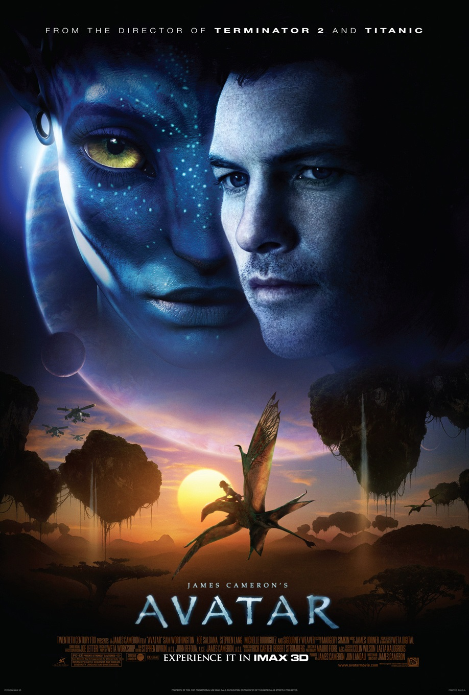

阿凡达

概况
导演: 詹姆斯·卡梅隆
编剧: 詹姆斯·卡梅隆
主演: 萨姆·沃辛顿 / 佐伊·索尔达娜 / 西格妮·韦弗 / 史蒂芬·朗 / 米歇尔·罗德里格兹 / 更多...
类型: 动作 / 科幻 / 冒险
官方网站: www.avatarmovie.com
制片国家/地区: 美国
语言: 英语 / 西班牙语
上映日期: 2010-01-04(中国大陆) / 2021-03-12(中国大陆重映) / 2022-12-12(中国大陆重映) / 2009-12-18(美国)
片长: 162分钟 / 178分钟(加长版)
剧情简介
战斗中负伤而下身瘫痪的前海军战士杰克·萨利（萨姆·沃辛顿 Sam Worthington 饰）决定替死去的同胞哥哥来到潘多拉星操纵格蕾丝博士（西格妮·韦弗 Sigourney Weaver 饰）用人类基因与当地纳美部族基因结合创造出的 “阿凡达” 混血生物。杰克的目的是打入纳美部落，外交说服他们自愿离开世代居住的家园，从而SecFor公司可砍伐殆尽该地区的原始森林，开采地下昂贵的“不可得”矿。在探索潘多拉星的过程中，杰克遇到了纳美部落的公主娜蒂瑞（佐伊·索尔达娜 Zoe Saldana 饰），向她学习了纳美人的生存技能与对待自然的态度。与此同时，SecFor公司的经理和军方代表上校迈尔斯（史蒂芬·朗 Stephen Lang 饰）逐渐丧失耐心，决定诉诸武力驱赶纳美人……